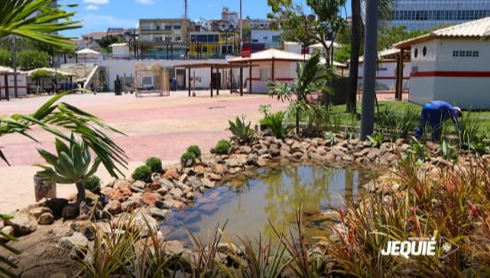
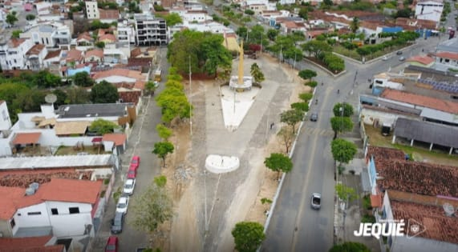
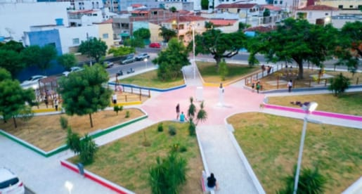

Raízes do clima
Raízes do clima
Raízes do clima
Raízes do clima
Somos estudantes do 3º C — Curso Técnico em Informática. Olhando para Jequié, percebemos o quanto as árvores e as praças fazem diferença no nosso dia a dia. Foi assim que nasceu este projeto: queremos valorizar a arborização, mostrar seus benefícios, apontar problemas e apresentar soluções para deixar nossa cidade mais verde, fresca e bonita para todos.
Torna os espaços públicos mais agradáveis.
Ajuda a reduzir a temperatura da cidade.
Filtra poluentes e aumenta a umidade do ambiente.
Proporciona lazer, conforto e saúde para a população.
Conheça algumas das principais praças da nossa cidade e veja como a arborização faz a diferença em cada uma delas.


